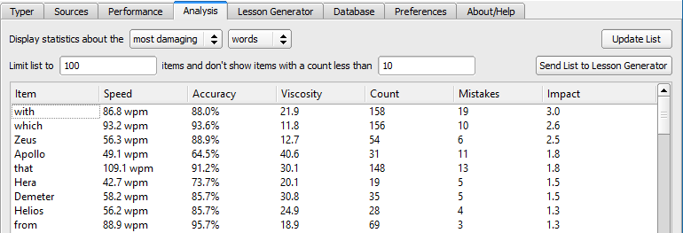
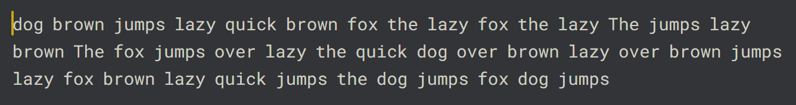

When I wake up, well, I know I'm gonna be
I'm gonna be the man who types a lot today
When I go out, yeah, I know I'm gonna be
I'm gonna be the man who goes the Colemak way!
When I get time, well, I know I'm gonna be
I'm gonna be the man who hones my skills today
And when I'm home, hey, I know I'm gonna be
I'm gonna be the man who has some fun today!
But I would type five thousand words
And I would type five thousand more
Just to be the man who typed ten thousand words
Much better than before!
~ DreymaR, 2017-02
This page contains tips and tricks for training your typing skills, and links to other sites and programs including the amazing Amphetype. Whether you're new to the layout and just want to learn it properly to get by with less confusion, or an advanced speed monster who wants to make that next Personal Best, there should be something useful for you here. Let's start off with some words from the wise before delving into my tools and tricks:
Accuracy guide by Fruit:
Accuracy Training Guide for Master mode†, by Fruit. Copied from the Monkeytype Discord.
Idea behind why it is good to train accuracy: You get good at what you practice. If you practice typing a word slowly and accurately, you get good at typing it slowly and accurately. This is why you should do mental preparation beforehand so that you can type a word at a normal speed and accurately.
†: Master mode in Monkeytype doesn't allow any errors. If you make a single mistake, your test will fail. Very punishing.
Wise words from 200+ WPM typist Sophie at the Colemak Discord on how to progress past 100 WPM – useful for other speeds too:
Sophie said:
When I was around 80 WPM I used to use Ctrl+Backspace to delete the entire previous incorrect word to give my muscle memory another shot at typing the thing out as a whole, and sort of like a tiny little self-punishment that made me not want to mess up after long sessions. But there was a point I definitely had to learn to stop stressing so much and pausing over my mistakes and just, in a way, hope I didn't miss.
I think it's really important to try to type a word [part] as one whole action instead of individual letters to get past 100. A good way to practice typing out whole words is to have a bit of fun messing around planning out your fingerings for each word, even if you have to pause on each spacebar for 2–3 or even 4 seconds. It's a good way to get a feel for how typing super fast feels without having to maintain a high WPM and just good practice at the "one word one action" kinda thing. Then maybe if that starts to get comfortable you could try 2 words in a row, and so on. Once you get the words ingrained like that, it's pretty much just a case of staying calm and spacebarring faster.
At the 90–120 WPM range it starts to become less about hitting single buttons fast consciously and more about a relaxed state of mind, your subconscious mind, and achieving a steady mental flow. Around 100 WPM is certainly not a speed that requires you to stress your fingers in any way, it's still at that point very much a mental challenge rather than physical.
Your mind and hands should both be relaxed – although if they start aching a little bit, like workout pain, this is good; you're building some raw strength. Some people say this is bad but I believe you can distinguish between a good pain for strength building and a bad pain for damaging yourself. I found my right pinky usage made my forearm ache for a while til I got it up to speed with the other fingers.
It's only when I type about 220 WPM raw speed I feel like I'm stressing my hands and that it's becoming a physical challenge. But I also have a long way to go in mastering my mindset and staying calm and just improving my typing in general. But yeah – I don't think there's really much physical challenge in achieving 200 WPM with Colemak so just stay calm, and most importantly enjoy your progress! Also experiment and have fun with bursting fast or whatever. You don't have to type rhythmically at the same pace for every word and key combination. Water can flow or it can crash, be water my friend...
Sophie's tips are in accord with what other expert typists have said. But with the added advice of being water! _/|\_
If you want to try your hand at word bursting, Burst-Type is a neat way to train common words. Eventually it'll be more about read-ahead and flow, which you can improve using other training tools.
For a list of other recommended typing guides, look near the end of this page.
Whether training or just typing normally, I try to make a point of deleting the whole word if I make a mistake.
This is sometimes faster, more precise and more comfortable than mashing the Back key, but more importantly it lets you type the word correctly before proceeding. That may help in the long run: When practising a music instrument for instance, I try to focus on doing it right so I don't ingrain any mistakes into my muscle memory and so I can learn in flow. I believe that typing is similar in this respect.
Extend helps me do this quite easily (Ext+T+O produces Ctrl+Back). A tap sequence may be even better (e.g., thumb key then an accessible letter).
You may have started using the Colemak layout because you heard that it's more ergonomic and comfortable? Congratulations on that choice then. But there are many other factors to consider and they don't only affect your wellbeing but your health and probably even your typing speed! So don't ignore ergonomics but learn and implement things that are good for you in all aspects of life, your typing included.
I will simply hand the mic over to Xayvier alias Viper, who quit speedtyping shortly after becoming the world's fastest Colemak typist because of bad hand pains, but is back now and still blindingly fast. Do check out Viper's Ergonomics Guide! You may also want to check out the top sections of the Ergonomy page.
As we Colemak users like to say: Your hands will thank you!
Alt-fingering means not using the default finger allocation for a key. It can be a weird habit, but it can also be a useful tool to avoid same-finger and other bad bigrams: Instead of hitting two following keys with the same finger which is stressful, you use different fingers even though both keys "belong to" the same finger.
At some point in learning a layout, you'll start to notice some bigrams being less than optimal. One of the selling points for Colemak is that it allows you to use standard touch typing technique without having to devise a lot of "homebrew" alt-fingering tricks to get fast. The fastest QWERTY typists typically use a whole lot of alt-fingering. However, any layout may at some point benefit from a little alt-fingering.
Some of the same-finger bigrams on the Colemak layout aren't all that uncommon, even though it's been designed to have a low SFB frequency:
E, KN UE SC Y.
Yes – SC/CS is a same-finger bigram on Colemak. If you've got CT/TC instead, you're using an "Angle Cheat" technique for which Colemak wasn't designed. I'd strongly advise you to use a proper Angle mod instead, since the CT/TC bigram is at least twice as common than SC/CS and so you'll compromise the excellent design of Colemak by cheating.
Slide your hand in so that the middle finger types N for KN/NK and MN/NM bigrams. This holds true whether you use Colemak Vanilla or DH. I'd even alt-finger KNE in 'knew' before returning to home position, after a while it becomes second-nature. It's not so easy for, say, LN/NL or UE/EU so you'll still have to do those the hard way. I often find downward curling bigrams like UE a bit easier than the upwards ones.
Alt-fingering is useful once you reach a certain level of dedication and skill. I wouldn't quite recommend it while starting up with a new layout, as it may confuse the newcomer trying to build muscle memory for the simple things. Gaining at least 50 WPM before starting with alt-fingering has been recommended. But several speed typists use it to good effect. I usually alt-finger KN/NK, LK/KL, and often MN/NM, TG/GT, BG/GB and TV/VT now (on Colemak-DH), by sliding in with the middle finger as described above. These all come naturally after a while due to their symmetry, but it's only KN/NK and probably LK/KL that are so common as to really need it.
Amphetype is a brilliant cross-platform typing trainer program written by Frank S. Hestvik, that has recently had a "revival release" with a platform update and some extra features. It'll be exciting to see its further development!
Amphetype can be used for leisurely typing texts or for intensive focused training sessions, as you like. It's flexible and informative despite being a one-man project – and it's free. I keep its database in my Dropbox so I can use it from anywhere while keeping track of my texts and progress.
There's an older version that I've used for years:
Old Amphetype:
The original Amphetype progam was released on GitHub and Google Code by Frank S. Hestvik alias "Tristesse".
This Amphetype version hasn't been developed since 2009, but it works without any problems and many people use it to this day. For Windows and Mac users though, running the old Python code may be problematic.
You can find a pre-compiled Windows .exe as well as an OSX build at Google Code Archive.
I like using a largish font (Cambria Italic 22) and subtle colors that don't annoy the hell out of me:
• Correct text – #000000 (RGB 0, 0, 0)
• Correct back – #eeeeee (RGB 238,238,238)
• Incorrect text – #660000 (RGB 102, 0, 0)
• Incorrect back – #aaaaaa (RGB 170,170,170)
When opening Amphetype in Windows, I usually press Alt+Space then X to maximize its window – or if you wish, use the mouse like a big muggle.
( Θώθ) c[_]

Amphetype's Performance tab, not sugar-coating my lack of progress. ᏊᵕꈊᵕᏊ
I usually get a book as a text file from Project Gutenberg or similar, and put it into Amphetype. Experiment a little with how large text chunks you want to use; I use somewhere between 300 and 900 characters. This is brilliant for getting a lot of typing mileage. I've "read" Machiavelli that way, as well as Alice Through The Looking Glass, some Lovecraft and a 19th century book of questionable moral value!
For racking up mileage by type-reading books, I recommend not using too strict parameters so you won't have to type the same page again very often. Your average speed -10 WPM and 97% accuracy is a good starting point. You set the limits on the Sources tab, while selecting what text/lesson to type next. I turn off the need to press SPACE before each lesson, so I can type fluently. The timer doesn't start until you start typing a page, so take your time before diving in if you want to.
Further inspiration: Maybe you want to learn lyrics or poems by heart? Of course, type-reading isn't the optimal way of enjoying poetry but can be a hard-hitting combo if you want to repeat a verse many times anyway! Maybe Kipling's "If" will sort out both your wisdom and typing skills at the same time!? Or maybe something motivational is to your tastes? Feel free to use the song I made at the top of this post... ￣(=⌒ᆺ⌒=)￣
Bewäre – of «ṡpéciãł çħâràcṭērṣ»: If your layout doesn't support special glyphs like accented letters, en/em dashes (–/—) and typographic quotes („” “” «» etc), make sure your text doesn't have them either. The book I'm currently typing about Greek and Roman mythology has some old-fashioned spellings like Æsculap and Aïdes. For my Colemak[eD] layers that's no problem at all, but beware if you aren't used to it. Here are some ways you can ensure you have a text you can type:
Defancifying typography:
Type-reading alternatives exist; see the links section below. One neat offline alternative is CopyType, a dedicated e-book typer program.

Amphetype about to start a book text session (from Berens' Greek/Roman mythology)
Below is a brilliant post (with an edit or two by me) on generating Amphetype training lessons to focus on hard or common words. It's from a topic called Lessons For Colemak Beginners, in which there are lots of other lessons you can use as well:
Generating Amphetype lessons:
Nimbostratue (2011) said:
Generating typing training lessons in Amphetype
Here is how to practice the 1000 most common words lesson in an effective way.
I place the 1000 words in Amphetype and use settings that will generate lines of text like this:
the of to the of to the of to and a in and a in and a in is it you is it
you is it you that he was that he was that he was
I set the program to allow me to keep practicing until I reach a certain desired accuracy and speed (see below).
When I pass this threshold I am allowed to continue to type the next 2 lines from the 1000 words.
In this way I learn the layout and practice the common words and bigrams (th,st,nt,ou,io,ea, etc) at the same time.
In fact I do not type the 1000 words most of the time. What I type is the first 130 to 150 words [or whatever suits you].
Then I start again from the beginning and increase the threshold by an extra +10 WPM.
In theory and my practice (I have tried this method with over 20 layouts) you should be able to advance every day by 6-10 WPM until 50 WPM. Once I practiced for only 2 hours every day using this method, and I was advancing 6+ WPM each day. So you do not need to spend too much time typing in the beginning when you learn a layout. You should focus on increasing your muscle memory for the common bigrams and common words, which will help you increase your speed quickly. This way will not train you for individual keys, it will train you for common bigrams and you will notice that you become much faster at typing bigrams than remembering key positions, but with the other lessons in my lessons thread you can improve on this. I usually use this method exclusively until I reach 28-30 WPM and then I start the other lengthy lessons in the lessons thread.
Amphetype settings:
"In generating lessons, I will make 3 copies of the list below and divide them into sublists of size 3"
The program will create either a single or multiple copies of each word interleaved according to the selection made.
For example if you pasted the text "about the it" and chose copies/size (I usually chose 3,3 or 3,4) you get:
2,3 --> about the it about the it
2,1 --> about about the the it it
Paste in the 1000 words (below), name the lesson at the bottom and click "Add to Sources" to save it.
Select to get new lessons "In Order".
Choose your lesson from the Sources pane on the left and double-click on it to start typing.
Keep typing each lesson until you pass the threshold. Do not hit Esc to skip any lines.
the of to and a in is it you that he was for on are with as I his they be at one have this from or had by hot word but what some we can out other were all there when up use your how said an each she which do their time if will way about many then them write would like so these her long make thing see him two has look more day could go come did number sound no most people my over know water than call first who may down side been now find any new work part take get place made live where after back little only round man year came show every good me give our under name very through just form sentence great think say help low line differ turn cause much mean before move right boy old too same tell does set three want air well also play small end put home read hand port large spell add even land here must big high such follow act why ask men change went light kind off need house picture try us again animal point mother world near build self earth father head stand own page should country found answer school grow study still learn plant cover food sun four between state keep eye never last let thought city tree cross farm hard start might story saw far sea draw left late run don't while press close night real life few north open seem together next white children begin got walk example ease paper group always music those both mark often letter until mile river car feet care second book carry took science eat room friend began idea fish mountain stop once base hear horse cut sure watch color face wood main enough plain girl usual young ready above ever red list though feel talk bird soon body dog family direct pose leave song measure door product black short numeral class wind question happen complete ship area half rock order fire south problem piece told knew pass since top whole king space heard best hour better true . during hundred five remember step early hold west ground interest reach fast verb sing listen six table travel less morning ten simple several vowel toward war lay against pattern slow center love person money serve appear road map rain rule govern pull cold notice voice unit power town fine certain fly fall lead cry dark machine note wait plan figure star box noun field rest correct able pound done beauty drive stood contain front teach week final gave green oh quick develop ocean warm free minute strong special mind behind clear tail produce fact street inch multiply nothing course stay wheel full force blue object decide surface deep moon island foot system busy test record boat common gold possible plane stead dry wonder laugh thousand ago ran check game shape equate hot miss brought heat snow tire bring yes distant fill east paint language among grand ball yet wave drop heart am present heavy dance engine position arm wide sail material size vary settle speak weight general ice matter circle pair include divide syllable felt perhaps pick sudden count square reason length represent art subject region energy hunt probable bed brother egg ride cell believe fraction forest sit race window store summer train sleep prove lone leg exercise wall catch mount wish sky board joy winter sat written wild instrument kept glass grass cow job edge sign visit past soft fun bright gas weather month million bear finish happy hope flower clothe strange gone jump baby eight village meet root buy raise solve metal whether push seven paragraph third shall held hair describe cook floor either result burn hill safe cat century consider type law bit coast copy phrase silent tall sand soil roll temperature finger industry value fight lie beat excite natural view sense ear else quite broke case middle kill son lake moment scale loud spring observe child straight consonant nation dictionary milk speed method organ pay age section dress cloud surprise quiet stone tiny climb cool design poor lot experiment bottom key iron single stick flat twenty skin smile crease hole trade melody trip office receive row mouth exact symbol die least trouble shout except wrote seed tone join suggest clean break lady yard rise bad blow oil blood touch grew cent mix team wire cost lost brown wear garden equal sent choose fell fit flow fair bank collect save control decimal gentle woman captain practice separate difficult doctor please protect noon whose locate ring character insect caught period indicate radio spoke atom human history effect electric expect crop modern element hit student corner party supply bone rail imagine provide agree thus capital won't chair danger fruit rich thick soldier process operate guess necessary sharp wing create neighbor wash bat rather crowd corn compare poem string bell depend meat rub tube famous dollar stream fear sight thin triangle planet hurry chief colony clock mine tie enter major fresh search send yellow gun allow print dead spot desert suit current lift rose continue block chart hat sell success company subtract event particular deal swim term opposite wife shoe shoulder spread arrange camp invent cotton born determine quart nine truck noise level chance gather shop stretch throw shine property column molecule select wrong gray repeat require broad prepare salt nose plural anger claim continent oxygen sugar death pretty skill women season solution magnet silver thank branch match suffix especially fig afraid huge sister steel discuss forward similar guide experience score apple bought led pitch coat mass card band rope slip win dream evening condition feed tool total basic smell valley nor double seat arrive master track parent shore division sheet substance favor connect post spend chord fat glad original share station dad bread charge proper bar offer segment slave duck instant market degree populate chick dear enemy reply drink occur support speech nature range steam motion path liquid log meant quotient teeth shell neck
The Monkeytype site has separate word lists for English (the 200 most common words), English 1k and English 10k. The smallest list is good especially to start up with but I think you need to prepare for some less common words and word parts too so maybe English 1k is a more balanced alternative? Or use English 10k with the Zipf Funbox for realistic word frequencies. If you use a non-randomized list in Amphetype, you can choose whether to type out the whole list or start over after typing part of the list.
GFruit's Words Filter is a handy tool for generating more specific lists of words to train on. You start with an English word list of your chosen size and set which hand/fingers/rows to filter out words from. You can also set the desired word lengths, what letters and n-grams to include/exclude and even what kind of alternation you want to study. The resulting filtered word list can be pasted into MonkeyType, 10FastFingers or Amphetype to start training with it.
Monkeytype (see below) has a word filter built in too! So that may be the easiest way to train problematic letters and (n-grams). To use Monkeytype's word filter, select 'custom' and 'change' in the upper right corner, then activate the filter and you can select what you want to include and/or exclude from your training session.
Colemak R-S training: If you're new to the Colemak layout, you may find the R and S placements hard to get used to since S moves just one key over. Many do, don't worry. We've explained elsewhere why they have to be placed like that. To train actively for this issue, use the word filter to select words containing 'r s'.
Furthermore, you can let Amphetype generate a list of your "most damaging" (or slowest, most mistyped etc.) words or trigrams, and send them to the Lesson Generator! I recommend editing out rare words before making the lessons themselves so you don't risk training words like 'Cthulhu' and 'Shub-Niggurath' a lot, but otherwise this is very useful once you've racked up some mileage in your database.
Amphetype's Analysis tab, where you can make and export lists of words or trigrams that cause you trouble
After type-reading Berens' Graeco-Roman mythology book for a while, Amphetype suggested this amusing list of words for me; I just sorted it and added punctuation:
Amphetype said:
They that were called under & into Hera/Zeus' order, have this beautiful form from their king/wife gods – with which their being became overly beautiful.
Really, that was my list of "most damaging" words – rearranged but complete. Heh! A truly divine typing task. (Θώθ )
Note that I find the implications of Amphetype's "viscosity" measure somewhat complex. Its author feels that metronomic typing is optimal if I understand him right, and this has indeed been an ideal in classic typing schools. Typing sites like Monkeytype also report consistency as a positive statistic; a high consistency corresponds to a low "viscosity" (the variance of time-per-keypress as I understand it). I think that high-alternation layouts like Dvorak promote a high pace consistency. On the other hand, we know that the best typists do speed up for familiar words and elements and brake down for the trickier ones. In the Colemak layout you can roll some word parts very fast. Ergo, the best typists in the world choose to have "bad consistency" to some extent?! Hmmm....! I still use the "most damaging" stat to select words, as it seems to be the most balanced measure.
I agree with Viper that what's actually important is a good typing flow, and that implies good consistency but with some flexibility too. The golden trifecta of typing is Speed, Accuracy and Flow.
Viper said:
I'd say anything between 85-95% consistency would probably be in the sweet spot
or would correspond to a good flow
below is likely too sloppy and above is playing music, not typing.
If you want to see lesson statistics and not just book text statistics on the Amphetype Analysis tab, select "Save key/trigram/word statistics from generated lessons" on the Preferences tab.
User bph has tried starting with the 1000 most common words and after a few runs through them, generating a lesson of the 200 most damaging common words! That's clever, and will make you train only words that are both common and hard for you.
N-grams are letter sequences that constitute the building blocks of words and word parts, as it were: Common bigrams like TH HE IN EN NT, trigrams like THE AND THA ENT ING ION, tetragrams like THAT THER WITH TION HERE, pentagrams and so on occur frequently in many English words.
Some n-grams are easy on an optimized layout, while some will prove tricky even using the best of layouts. Training with a focus on common and damaging n-grams is therefore a good idea.
Youtuber Ben Vallack quite agrees with me on this and explains it very nicely, so if you're interested go ahead and watch him say this better than I could. 👍
misterW (lightly edited) said:
Typing is all about grouping chunks of characters together and into your memory. Grab a list of the most common words and n-grams: 'the', 'and', 'with', 'that', 'tion', 'ing', 'for'. You want to be typing those extremely fast. Roll your fingers whenever possible. You want to commit these chunks into memory. You could think of it as, "I'm going to become the best in the world at typing the word different."
What would you need to do to accomplish that? You need to practice it until it becomes second nature that you don't even have to think about it. Visualization helps. When away from the keyboard, visualize in your mind where the keys are and what fingers you will use to type the word "that" or whatever word you struggle with.
[...]
Don't practice full paragraphs that you struggle with. Practice small words or phrases, one at a time. So if you want to learn the 'tion' 4-gram, just keep practicing that. Then add a leading letter: 'ation', 'etion', 'ition', 'otion', 'ution', 'ption', get fast and comfortable with all of those combinations. Then try full words: 'station', 'motion', 'fruition'. You'll notice that the start of those words you haven't practiced, so you will be slow for the first few letters, and then you'll speed through the 'tion' part that you practiced. That's good.
Practice it every day. If your hands get tired, take a break and freshen your mind by trying a new combination, say 'ent'. Then 'went', then 'enter', progressing to 'movement'.
Here are a couple of sample lists for focusing on n-grams. Feel free to add your favourites below!
Spoiler:
io on ion tion ation etion ition otion ution ption nation station fruition gumption tuition completion attention assumption interruption
he the then them they there their they're theirs theme theory therein thermal thematic therefore theology theatrics themselves anathema
See the links below for more word lists. You can filter any such list by n-grams if you wish.
You can of course use the above mentioned lesson lists with other training tools such as Monkeytype or TypeFaster, if you like.
There's also a very nice n-gram trainer by RanelPadon (you can find him on the Colemak Discord): NGram-Type. Simple, neat and recommended.
Note that the YOU trigram isn't great on Colemak. There, I said it. It uses the pinky which is often untrained for people coming from the QWERTY layout, and it contains a redirect (back-and-forth motion). I'm used to it by now. But some users have even considered switching to yet another layout because of it. Keep in mind though, that while "you" is a common word on its own, most other n-grams are very nice with Colemak.
Pangrams are short phrases that contain all the letters of the alphabet. Speed typist Sophie at the Colemak Discord used the well-known one about the quick brown fox to learn Colemak! She just typed it over and over until she knew where all the keys are. It's not a bad way of learning a layout I think, as you can do it anywhere without other tools than a simple text box – or in Amphetype or Monkeytype (see below) if you wish.
At higher skill levels, it's probably best to switch your training to the most common words and n-grams as described above. But maybe it's beneficial for trained typists as well to drill the placement of the rarest letters too now and then, as those may trip you up more easily.
Sophie recommends using a pangram with mostly typical words. The "quick brown fox" one is a good example, as it uses the common word/trigram "the" twice and has no really weird words. Here are some fun pangram examples:
The quick brown fox jumps over the lazy dog
Pack my box with five dozen liquor jugs
Sphinx of black quartz, judge my vow.
We promptly judged antique ivory buckles for the next prize.
How razorback-jumping frogs can level six piqued gymnasts!
That quick beige fox jumped in the air over each thin dog. Look out, I shout, for he’s foiled you again, creating chaos.
That last one is a phonemic pangram, containing the sounds in English rather than its letters. It lacks W and Z but those are the same in QWERTY and Colemak anyway. I think it's a cute spin on the first one! (✿◠‿◠)
The razor-toothed piranhas of the genera Serrasalmus and Pygocentrus are the most ferocious freshwater fish in the world. In reality they seldom attack a human.
This isn't a pangram but close: It's the 160-letter phrase used by The Guinness World Records for their SMS speed record. Good practice for any keyboard type.
Here's an example of pangram training using Monkeytype, see below. I used the common "The quick brown fox..." phrase which comes up by default on the custom test, pressed "change" then "random" and a suitable word count. I'd use that until I felt ready to move on to the usual word list tests.
Monkeytype screenshot with custom word pangram training
Tarmak, as you may know, is a progression of four intermediate layouts forming stepping stones to the Colemak layout by only changing 3–4 keys at a time to ease the mental load. Many have used these Tarmak layouts to learn Colemak gradually, while others prefer to dive right in and learn Colemak hard core cold turkey.
But there is a middle ground! Bitesize learning may be a great idea for you, whether you elect to install a layout progression like Tarmak for it, or not. This also has the advantage of not displacing any keys while learning (Tarmak moves the J key around to allow splitting up the transition). However, unlike a real Tarmak progression it won't allow you to type normally while learning so it's learning by training, not by "just doing".
User colemux devised a clever way of sorting out words based on the Tarmak steps to train on. Doing this, you can have either full Colemak or the appropriate Tarmak# layout installed while training. In a way, it's learning with Tarmak without the need for installing Tarmak!
Spoiler:
colemux said:
Even for those happy to stick to pure Colemak, I think Tarmak is a nice route for that too: Just take each Tarmak level in turn and pick only words that are "pure Colemak" to practice with, in the sense that they don't include any keys that are not in their Colemak positions in Tarmak# – e.g. for Tarmak4, no L, U or I.
If at some point you do wish to type some real text while keeping your Tarmak training warm, you can then use the Tarmak layout step you have trained up to as it'll have all the letters you've trained in their Colemak positions and the others in their QWERTY positions.
The new letters in the five Tarmak steps are enk gtf rsd jyop lui. The letters common for QWERTY and Colemak are qw ah zxcvbm.
Here's how to make a "pure Tarmak4 only" word list using the BASH command line in Windows or Linux:
grep '^[enkgtfrsdjyop]*$' google-10000-english-sfw.txt | sed -r '/^.{,2}$/d' | grep 'j\|y\|o\|p' > train-tarmak4-len3-co.txt
This produced a list of 360 words...
For the first steps, include the common-ground letters to get enough words:
grep '^[qwahzxcvbmenk]*$' google-10000-english-sfw.txt | sed -r '/^.{,1}$/d' | grep 'e\|n\|k' > train-tarmak1-len2-qwco.txt
This produced 120 words...
I have prepared a file with a set of such word lists. Paste one into, e.g., Amphetype or Monkeytype to generate custom lessons. This way, you can learn Colemak by the Tarmak route while using your preferred learning tool(s).
But there are ready-made ways too: At the online learning page Colemak Camp (or its predecessor Colemak Club) you can select either Tarmak(-DH) or Colemak(-DH) as your layout to learn. The former gives you words to type based on the Tarmak steps as described above, while the latter is the more conventional learning approach starting with the home positions and adding rarer letters/positions as you rise through the levels. Choose which approach suits you best!
By the way: I found a little online tool for Tarmak learning/training while using a QWERTY layout. If you're interested, check out the Transition Colemak page. When I tested it though, it behaved erratically.
Monkeytype bears special mention. It's a smooth online trainer offering no-nonsense tests but also lots of possibilities and settings as desired. You can train words from different languages, interesting quotes and custom text. You can use tags to mark different test settings such as which Tarmak step you're on or whether it's afternoon. Monkeytype makes instructive graphs showing your speeds and mistakes through each test, and has become a natural favorite of the Colemak Discord.
There are several available language settings; press Esc then 'language' to see them. The default English word list consists of only the ≈200 most common words which I consider too little variation, so I've used English 1k instead.
But a great addition has arrived in the form of the Zipf funbox. This gives you the most frequent words more often, and rare words every now and then, at approximately realistic frequencies. I actually did the calculations for it, using the logarithmic Harmonic number approximation. So now I use the frequency-sorted English 10k list plus Zipf and it's very satisfying!
If you're curious about how Zipf's law looks in practice, there is a no-nonsense typer named Nonsense (yes, the irony of that sentence amuses me!) by Callum Oakley that predates the MonkeyType funbox by years. It uses a 10k English word list with Zipf's Law, but no punctuation. Have a look!
Another nifty tool is the word filter, as it helps you focus on any weak spots. See the Focused Lessons section above for instructions.
To make tests more realistic, I use the 'punctuation' setting which gives an authentic experience. A default test lasts 60 s, but for practice I prefer to chain two or more 30 s tests together instead. When you really want to set a new speed record for a Monkeytype Discord speed role or something, you may of course practice the short English word list without punctuation. In the long run though, that short list is silly, unrepresentative of real typing and frankly quite boring!
Some recommendations from 200+ WPM Colemak typist oats for a more serious training regime:
oats said:
As for improving, the simplest way I can put it is that you have to consistently keep pushing yourself outside your comfort zone – i.e., deliberate practice. I think that monkeytype.com is the best website to do this since you are able to toggle long/"thicc" quotes as well as practice with wordlists.
My favorite setting is English 10k, 120s, Punctuation. I intentionally slow down a bit to focus on having the best accuracy possible, it's quite challenging and never gets old and has been very useful for improvement.
Here are some test and appearance settings I use and recommend:
Recommended Monkeytype settings:
Viper and I have designed a custom color theme with bright colors. Click this Share Custom Theme link to try it out.
We also recommend the following appearance settings for a clear, easily readable experience:
Monkeytype high-contrast color scheme by Viper and DreymaR
Other Monkeytype settings I found useful:
To promote using Ctrl+Back to retype wrong words, Gary_Internet at the Colemak Discord uses this interesting setup:
Monkeytype using whole word selection. Delete only your error or the whole word? Do or do not.
I always wanted to type on a Matrix layout! ￣(=⌒ᆺ⌒=)￣
Here are some typing improvement tools I've used and/or found promising:
The Typing Gaming section holds descriptions of The Typing of the Dead and other typing games. Fun, fun, fun – and useful too!
If you're new to Colemak and didn't opt for the Tarmak experience, then maybe KeyZen-Colemak-DH could work for you? It lets you learn by simply doing in the here and now, without stress. Once you know the layout, you could just write any text into an editor in full-screen mode for mindful typing. Om, Om! _/|\_
These links are about making specified lists of words:

An eager typing trainee (courtesy of TenFastFingers)!
{kind=link}